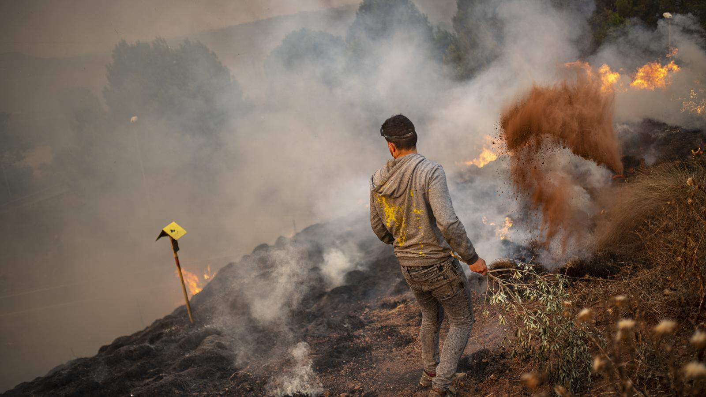

La capital de Ecuador ha vivido horas de terror debido a 27 incendios forestales que han cubierto la ciudad con un humo espeso y ceniza, lo que obligó a las autoridades a declarar el estado de emergencia.
En el sector residencial de Guápulo, casi simultáneamente en el Parque Metropolitano, el cerro Auqui y la autopista Simón Bolívar, que a diario acumula un intenso tráfico. La situación llevó al gobierno municipal a cerrar vías y a pedir a los ciudadanos que no se movieran, para permitir que los equipos de socorro tuvieran las calles despejadas.
Mientras esto ocurría, otros seis incendios se activaron simultáneamente. Para las autoridades, estaba claro: la ciudad está bajo ataque, vícitima de incendios intencionales. Estamos catalogando estos actos como criminales y terroristas.
